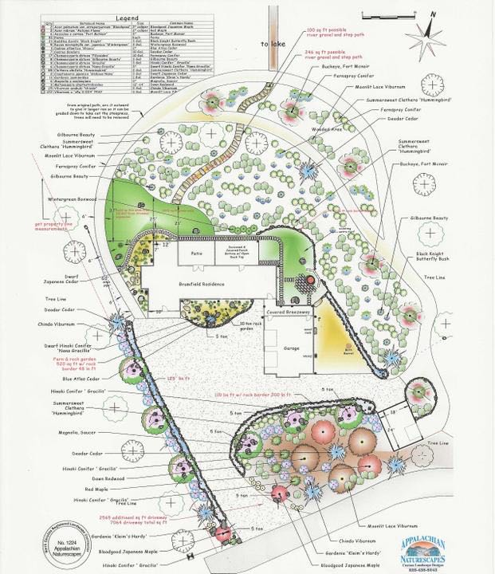

Design
Scaled CAD blueprints drawn with our own in-house symbols. Drainage, slopes, curb appeal, plant selection and how people and cars move through the property are all part of the plan.
Master plansOutdoor livingDriveways
Design services